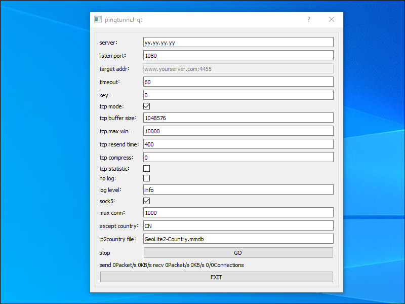

Pingtunnel ICMP Tunnel
Pingtunnel is a last-resort tool you can try when almost all TCP/UDP traffic is blocked. It transmit packets to a proxy server using ICMP (the ping protocol). The proxy server then reconstitutes the TCP/UDP traffic and forwards it to the intended destination. This would normally be slow, but under some circumstances it can actually speed up network transmission. The server in the sample commands runs Debian 10. The client is a Windows 10 PC.
1. Server
1.1. Install and Configure Firewall
We begin by installing a firewall and configuring it to accept SSH input. Obviously we must also accept ICMP input. Issue the commands that follow:
apt update && apt upgrade -y
apt install nftables -y
systemctl enable nftables
systemctl start nftables
nft add rule inet filter input ct state related,established counter accept
nft add rule inet filter input iif lo counter accept
nft add rule inet filter input ip protocol icmp counter accept
nft add rule inet filter input tcp dport ssh counter accept
nft add rule inet filter input counter drop
Save these firewall rules:
nft list ruleset > /etc/nftables.conf
For better security, restrict port 22 access to trusted IP addresses only. For example, if you always log in from IP address xx.xx.xx.xx:
vi /etc/nftables.conf
Edit the line for the SSH port, and restrict it to accept only your personal source IP address:
tcp dport ssh ip saddr xx.xx.xx.xx/32 counter accept
Save the file. Restart the firewall:
systemctl restart nftables
1.2. Disable System Ping Response
Normally a server would automatically respond to a ping echo request. We want to inhibit this response. Edit the system control configuration file:
vi /etc/sysctl.d/10-noecho.conf
Add the following line:
net.ipv4.icmp_echo_ignore_all = 1
Save the file. Enforce this setting immediately:
sysctl -p /etc/sysctl.d/10-noecho.conf
1.3. Download Pingtunnel for Linux
In a browser on your PC, visit the GitHub releases page, and determine the latest
release of Pingtunnel. Download pingtunnel_linux64.zip for that release. For example, if the release number is 2.4, then issue the command:
wget https://github.com/esrrhs/pingtunnel/releases/download/2.4/pingtunnel_linux64.zip
Extract the binary from the zip file:
apt install unzip -y
unzip pingtunnel_linux64.zip
Copy the binary into the correct directory:
cp pingtunnel /usr/local/bin
1.4. Create Systemd Service File
Create a systemd service file for Pingtunnel:
vi /usr/lib/systemd/system/pingtunnel.service
Insert contents as shown below:
[Unit]
Description=Pingtunnel Server
After=network.target
[Service]
ExecStart=/usr/local/bin/pingtunnel -type server
Restart=always
RestartSec=5
[Install]
WantedBy=multi-user.target
Save the file.
1.5. Run Pingtunnel
Start Pingtunnel after every reboot, and also start it right now:
systemctl enable pingtunnel
systemctl start pingtunnel
1.6. Check Pingtunnel
Check that Pingtunnel is active (running) and that there are no error messages:
systemctl status pingtunnel
journalctl -u pingtunnel
2. Client
2.1. Download GUI Client
Now go to your PC for the client set up. You can run the Pingtunnel client from the command line, but we will use the graphical user interface (GUI). Download the GUI zip file from GitHub. Once you have the zip file, unzip it to get the executable.
2.2. Configure GUI Client
In the folder pingtunnel, double-click on pingtunnel-qt.exe to run the client program. If you get a message from Microsoft Defender
SmartScreen to say that Windows protected your PC, then click More info followed by Run anyway.
Modify the server IP address or hostname to point to your server. Make the listening port 1080. Check the box for SOCKS5.
2.3. Run GUI Client
Click GO. If the Windows Defender Firewall box appears, click Allow access.
You can optionally click the X at the top right of the Pingtunnel window to hide the GUI in the system tray.
2.4. Configure Browser
You need to configure your browser to send its requests via the SOCKS5 proxy listening on localhost port 1080.
If you use Firefox, you can do this from Options. Scroll down to Network Settings, and click Settings.
- Choose Manual proxy configuration.
- SOCKS Host
127.0.0.1. - Port
1080. - Select version SOCKS v5.
- Check Proxy DNS when using SOCKS v5.
If you use Chrome, you can do the same thing with the Proxy SwitchyOmega extension by FelisCatus.
2.5. Check
Check that you can visit websites in your browser. If you want to examine the traffic to and from your server, install and run WireGuard. You should see only ICMP packets.
2.6. Close
When you are done, find the Pingtunnel icon in the system tray, right-click, and select Exit. Set your browser back to system proxy settings (which usually means unproxied).
3. Get Help and Report Issues
You can report issues on the GitHub issues page.
Updated 2020-10